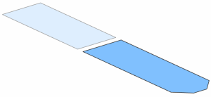

Make Solar Panel Outer_fem1.fem the work part.
Edit Solar_Panel Outer_fem1.fem.
Set the Edit Bodies to Use to All Visible.
Refer back to the previous step for details.
The component FEM now contains only the polygon sheet body representing the midsurface.
